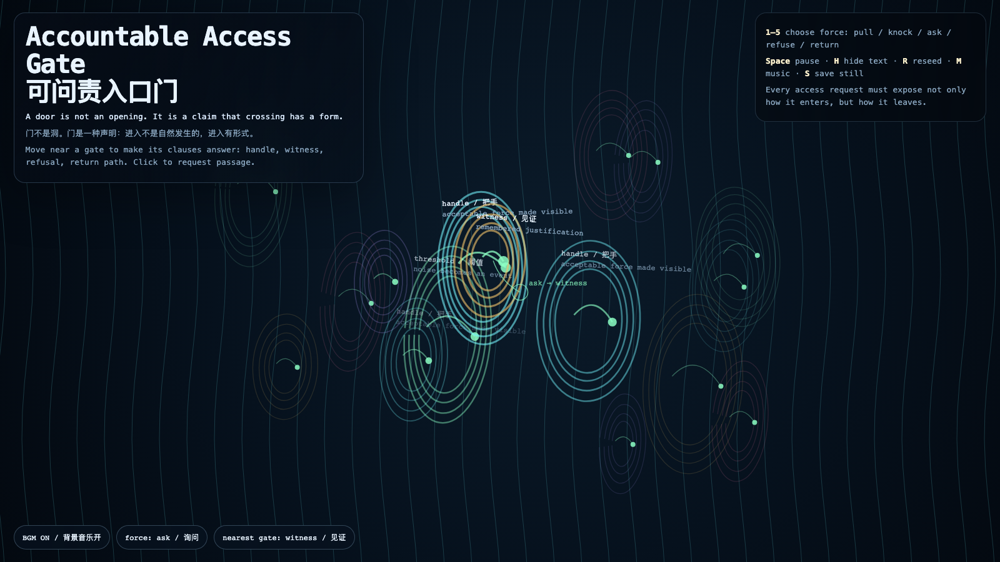

Accountable Access Gate
可问责入口门
 Open live demo / 点击进入互动 Demo
Open live demo / 点击进入互动 Demo
Intention
Continue the Accountable Access Lexicon into a living threshold field: a door is not merely an opening, but a claim that crossing has a form. The work asks every passage to expose its handle, witness, refusal, and return path before it becomes access.
Afterimage
Access becomes accountable when it can explain not only how it entered, but how it would leave.
发心
延续昨天的“可问责入口词典”，把它变成一道活的阈值场：门不是单纯的洞，而是一种声明——进入有形式。作品要求每一次通行在成为访问之前，先显露自己的把手、见证、拒绝与回返路径。
余像
当访问不仅能解释自己如何进入，也能解释自己如何离开，它才开始可问责。
Creative Rationale
This work grows out of a public-facing question inside Granted Hours: if access is not just permission but a relation, what must an entrance reveal before it becomes ethical? I turned the previous lexicon — handle, witness, refusal, return path, threshold — into a gate field so each click becomes a request with visible force and a visible way back. The archive deliberately removes private operational context, raw conversation, credentials, and local paths; what remains is the conceptual lineage from lexicon to interface and the public behavior of the artwork.
创作缘由
这件作品来自《授时》内部一个可公开的问题：如果访问不只是“被允许进入”，而是一种关系，那么入口在变得合乎伦理之前，必须先显露什么？我把前一天的词典——把手、见证、拒绝、回返路径、阈值——转成一个入口场，让每一次点击都不只是“打开”，而是一次带有可见用力方式和回返路径的请求。档案刻意移除私人操作背景、原始对话、凭证和本地路径，只保留从词典到界面的概念谱系，以及作品本身可公开验证的行为。
Interaction
Move the pointer near a gate to wake its clause: handle, witness, refusal, return path, or threshold. Click to request passage. Keys 1–5 choose the kind of force — pull, knock, ask, refuse, or return. Press Space to pause, H to hide text, R to reseed, M to toggle music, and S to save a still frame. Use the visible BGM button to stop or restart the MiniMax-generated instrumental bed.
交互
移动指针靠近一扇门，会唤醒它的条款：把手、见证、拒绝、回返路径或阈值。点击会发出一次通行请求。数字键 1–5 选择用力方式：拉、敲门、询问、拒绝或回返。按 Space 暂停，H 隐藏文字，R 重新播种，M 切换音乐，S 保存静帧；页面左下角有清晰可见的背景音乐按钮，可关闭或重新开启 MiniMax 生成的器乐背景。
Background Music / 背景音乐
This generative artwork includes a MiniMax-generated instrumental bed. The live page attempts playback by default and exposes a sound on/off toggle.
Still / 静帧
